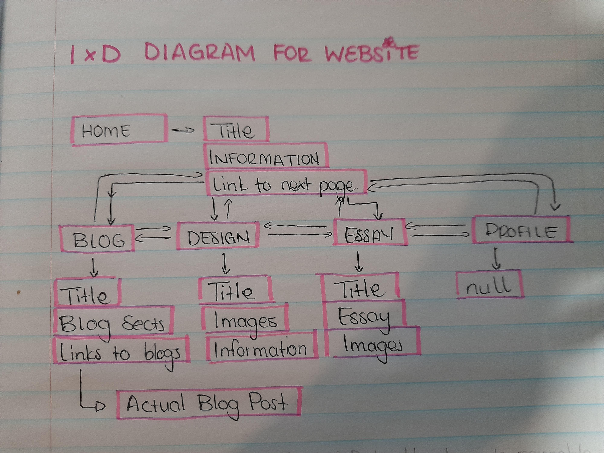

From the reading, I gathered that hypertext is essentially a form of media that includes a variety of ways in which text can be utilised.
From the scientific perspective, hypertext focuses or relates more towards machine learning and interaction upon request.
Wardrip goes on to state that Theodor Holm “Ted” Nelson coined the term Hypertext and was the one who basically defined it as a form of media.
Me reading this article made me a bit confused as to what was actually being talked about so I did some side research.
According to Technopedia and (please dont shoot me, I really needed an answer) Wikipedia, I was able to deduce that the hypertext being referred to is the current coding language we are being taught to use.
Hypertext is basically a language that utilises hyperlinks that are able to display and join different types of media.
It’s called a language due to its sequencing and arguments it poses when being used to create a line or paragraph of code.
There are similarities to be drawn to other forms of media as presented by Fruin, mainly designing.
In order for the hypertext to generate an outcome, one must first have an initial thought or design as to how the end product or result from the text will generate.
Same as other forms of media whereby the process has to be mapped out first before the procedure.
OVERALL REVIEW OF WEEK 1:
Week one was mainly focused on setting up and getting to know what html is and how to best utilise it.
I had a bit of trouble with setting up GitHub, specifically with linking my account to the school account in order for it to appear on the lecturers end.
The main goal for the week was to complete the set up and to start brainstorming ideas on how to best conduct the wireframing of our websites and what we want them to look like.
Weaknesses I have so far mostly revolve around GitHub and the online set up but everything else wasnt as bad, especially visual studios.
I am personally looking forward to planning out the wireframes and building the website. I feel like with enough time, I'll be able to make a good website and have a steady understanding of GitHub.
I'm also looking forward to learning about CSS and styling to make the site more colourful.
BLOG POST 2: INTERACTION AND THE WWW
READING: Moulthrop - 2003 - You Say You Want a Revolution Hypertext and the Laws of Media
This reading, to me, seemed like a continuation from the reading I chose for week 1.
It’s still explaining or rather reiterating what hypertext is, except in this reading it is further expanded upon.
Moulthrop expands on this argument by exploring the concept of hypertext, a technology allowing non-linear access to information.
He discusses its historical development, from early concepts by Vannevar Bush to Theodor Holm Nelson's ambitious project, Xanadu.
Moulthrop reflects on the reception of hypertext, its potential societal impact, and the challenges in realizing its full potential.
He considers the cyclic nature of technological trends and the perpetual desire for the "next big thing" in postmodern culture.
Moulthrop also raises questions about the political and social implications of hypertextual societies, including issues of authority and access.
Overall, he prompts readers to critically engage with the implications of hypertextual technologies for culture, politics, and social order.
From this reading I have gathered that Moulthrop, Nelson and Fruin all expand hypertext as a form of media.
Moulthrop, however, explores the options of the outputs that come from inputting something in the hypertext.
Each subheading describes either actions or inputs that can be used by the hypertext.
These subheadings include phrases such as “What does hypertext enhance or intensify?”, “What does hypertext displace or render obsolete?”, “What does hypertext become when taken to its limit?”.
These are questions that could be answered by actually inputting something to hypertext to generate an answer. However there’s also a lingering feeling of fear when Moulthrop asks these questions.
It feels as though there is an underlying warning about the dangers of expanding hypertext or using it in an unethical manner.
LECTURE VIDEO AND SLIDES:
The lecture video was based on Human Centred Design and how to create reasonable and ethical designs.
The video mainly talked about the designs of doors and how majority of the doors are designed with aesthetic in mind instead of functionality.
Through highlighting the importance of good door designs to combat the shitty ones that are quite frankly everywhere, I was able to get the understanding of creating good UI and good hypertext navigation is vital for good user Experience.
The lecture slides highlighted the importance of links, inputs, and outputs. In order for a hypertext site to be interesting, there must be areas of input and output to keep the user engaged.
Some inputs and outputs include Mouse Events (click), UI (scroll) and others.
WEEKLY PROGRESS
This week I have started gathering ideas on how to structure the website. I have drawn up a few wireframes to illustrate how I want my website to look.
I have already started using links and some semantics on my website but I am more focused on the functionality of my site and the style guide.
BLOG POST 3: Interaction Design for the Web
LECTURE AND WEEKLY PROGRESS
In the lecture video, a range of topics were covered. These topics spanned from the use of Git and Github setup to Dom trees and document Structures.
Overall what I got from the video was that semantic markup is basically the practice of using HTML elements to accurately represent the meaning and structure of content on a webpage.
I wasn’t quite sure about how to use them and what they were but I was able to use the video as a guide after figuring stuff out by myself using MDN documents and W3 school.
I now understand that Semantic markups improve the readability and maintainability of the code. Learning about the DOM tree put thing into perspective because it made structuring my website a bit easier now knowing what goes where.
I also changed from using a lot of sections to using articles for my blog post structuring. I removed a bunch navs in order to make the code neater, taking some advice I have received from an IM 4th year lecturer.
I utilised the header system due to the fact that we haven’t really started with css yet and I almost made the mistake of using h1 for every heading I had in order to make them bold and big.
Overall there were a lot of changes made from my initial website that I was building last week but in terms of structuring, I feel like I have made good improvements.
I have missed a couple of in class lectures but I made up for it by exploring more tags and markups. I included a time tag that tells the date of the different blog posts written and used the h3 for sub headings and h2 for each week’s title.
BLOG POST 4: The IxD Process / Headers and Microformats
LECTURE MATERIAL
Going off on what was said last week in the lecture video, this lecture goes on to specify the importance of Document structure and planning. It also explores Headers and formatting, specifically the http and url schemes.
In this module, we have already explored the url scheme in the first week when setting up Github. We had to create a directory that could lead us to the Interactive media 3 section in github and add it onto our url.
I am still somewhat confused about the naming convention because I did it wrong and only saw a couple of days later that I didn’t use an underscore but used it for the repository that I didn’t add on the IM3 section.
The IxD process was a bit tricky to understand but I inevitably tried my best to do what I thought was being asked of me. I created 2 diagrams that showed the relationship or interaction between my pages.
I only covered the main 3 which are the Blog, Design, and Home pages. I did a semi detailed description of each page and what it contains. I thought I would better explain it here instead of a drawing.
IXD PROCESS DIAGRAM
So in this diagram I made the root of everything the home page because that’s the first page to pop up when opening the site. Its also the first page to experience changes on the developer side.
Within my home page I will first display the title, then information and the links to the next pages. I forgot to draw in that I meant links in the navbar that display the different pages when clicked.
I also forgot to add the footer for most pages in the diagram. I plan on including my details and information in the footer as opposed to my original wireframe idea which was to add the navbar there as well, following the apple website design.
The Blog post section will go under iteration seeing as we haven’t really gotten to css yet but I intend to follow the wireframes to the t. There will be 2 pages for the blog posts, one will be the main display page, the other will expand upon the blog in great detail.

BLOG POST 6: REFLECTION
DISCUSSING WEBSITES
In this blog I will discuss what websites I have been looking at to write about in the essay. I have ultimately boiled the list down to two websites which are:
The Tesla website
And the South African home affairs website.
I was debating between the two and drew up a list of pros and cons for each one.
Beginning with the Department of Home Affairs website, the website can be complex and challenging to navigate, especially for users who are not familiar with government processes or terminology. Important information is buried within multiple pages or difficult to find without specific guidance. The website has an extremely cluttered home page with some significant presentation issues. It’s difficult to look over everything because of this. The homepage is also cluttered with many links that do not work. The biggest issue with the website is that it is outdated. This results in many connective issues as well as incompatibility with various browsers. The positive aspects of the website are mainly the services that it provides. These services are integral to the lives of all South Africans. The site provides a platform for people with services related to citizenship, immigration, identity documents, passports, and other civil affairs matters. These services can be quite limited, forcing users to visit physical locations.
The Tesla website serves as the primary online platform for Tesla, Inc. The website plays a crucial role in showcasing Tesla's products, services, technology, and company information to customers, investors, and the general public. The website is well made and has convenient features that make is user friendly. The home page is well put together and is pleasant to look at with its image background and neat presentation. At the top of the site is a nav bar with buttons that activate a drop down upon hovering. The various products that the site presents are properly organised by type, keeping everything separate and allowing for the user to navigate the site with little to no trouble. The site is well up to date and meets modern standards, there is nothing noticeably negative about the site’s functionality or connectivity.
BLOG POST 8: DIGITAL DIVIDE WIDENS
UNpacking an Article
"DIGITAL DEVIDE WIDENS" by Maria Tataki and Dimitris Glynos is an article that disproves the online learning system as the holy grail to future learning and education. With over 1.5 billion students globally affected by school closures, the reliance on e-learning has increased drastically.
Despite all of this, UNESCO reports that a staggering 50% of these students lack access to a computer, and 40% are entirely disconnected from the internet. This is also a lot to take in when you realise that there is currently 82% of children in Africa who basically do not have online access to proceed with the school year.
Minorities from 1st world countries also don’t have access to technology in that way, which was a huge shock to me.
The workplace isn’t safe either, with workers that work jobs that don’t have the luxury of remote work have seen the worst parts of having or losing your job. High-earning occupations afford the luxury of remote work, while those in lower-paying sectors face the brunt of job insecurity due to the inability to work from home.
Economic challenges further compound this divide, as low-paying sectors that require physical presence bear the brunt of job losses, disproportionately affecting those without a university degree. The pandemic-induced economic turmoil underscores the urgency of bridging the digital gap, as social distancing measures intensify disparities in income and wealth distribution.
The lancet digital health also states that The COVID-19 pandemic has made existing digital gaps around the world even bigger. In healthcare, the move to using technology for things like online doctor appointments has meant that some people, especially those in rural or underserved areas, can't get the care they need.
The shift to online learning in education has also made things harder for students who don't have good internet or computers, especially in communities that are already struggling. These digital gaps don't just stop people from getting important services, they also make existing inequalities worse, because people who don't have access to technology are left behind in a world that relies more and more on digital tools.
BLOG POST 10: DIGITAL INEQUALITIES AND WHY THEY MATTER
SUMMARY AND MY UNDERSTANDING
Digital inequalities and why they matter is an article that highlights the importance of understanding digital inequalities in conjunction with traditional forms of inequality such as race, class, and gender. It calls on social scientists to recognize digital inequality as a significant issue, urging for focused research into different aspects including access and usage. The authors suggest that comprehending digital inequality is crucial for addressing equity and opportunity concerns in the modern world.
Digital inequalities and why they matter is an article that highlights the importance of understanding digital inequalities in conjunction with traditional forms of inequality such as race, class, and gender. It calls on social scientists to recognize digital inequality as a significant issue, urging for focused research into different aspects including access and usage. The authors suggest that comprehending digital inequality is crucial for addressing equity and opportunity concerns in the modern world.
A notable area of concern is the widening gap in digital footprint among children, related to varying levels of access, usage, and skills influenced by economic differences. The imbalance in digital resources can lead to long-term consequences on academic performance and workforce integration. Engaging digital engagement can pose challenges, blurring boundaries between work and personal life. Mastering digital information becomes advantageous, especially for those in the 'sandwich generation' caring for both young children and elderly parents. Effective digital resource use can ease caregiving burdens, whereas lacking digital skills may worsen challenges. Similarly, in retirement and old age, digital engagement becomes vital for staying connected, yet less educated and economically disadvantaged seniors face barriers in utilizing online channels effectively.
Regarding gender disparities, although the gap in internet access has narrowed, differences continue to be present in online activities and skills. Women's internet use tends to be less frequent and intense, with lower reported internet skills compared to men. Gender is a factor in digital inequality in terms of skills, content production and representation in IT roles. In terms of race and ethnicity, the article dives into the importance of studying digital inequality to understand how different social groups access technology and how digital engagements influence social disadvantages. Digital inequalities often exacerbate racial and ethnic disparities, reflecting inequality in social networks.